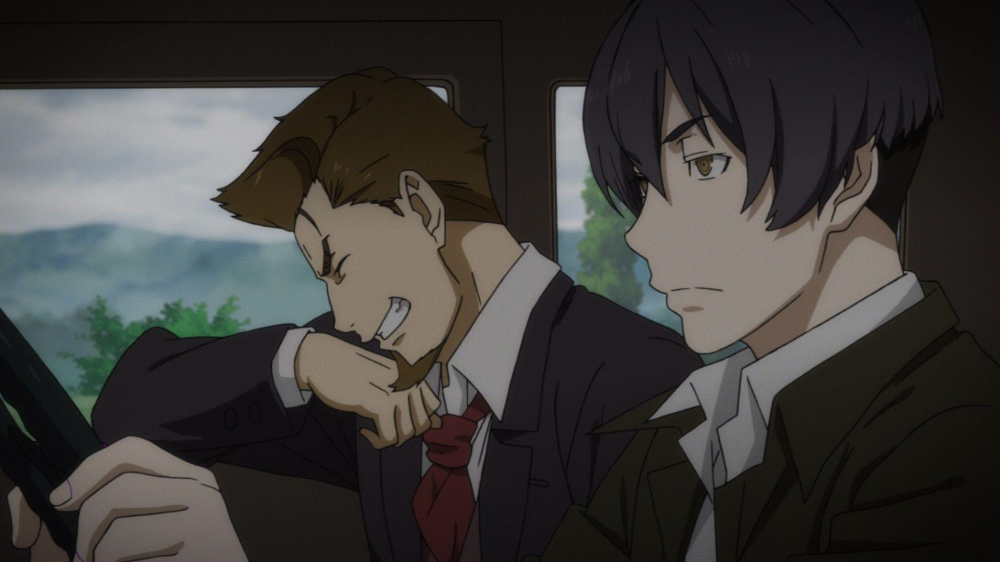
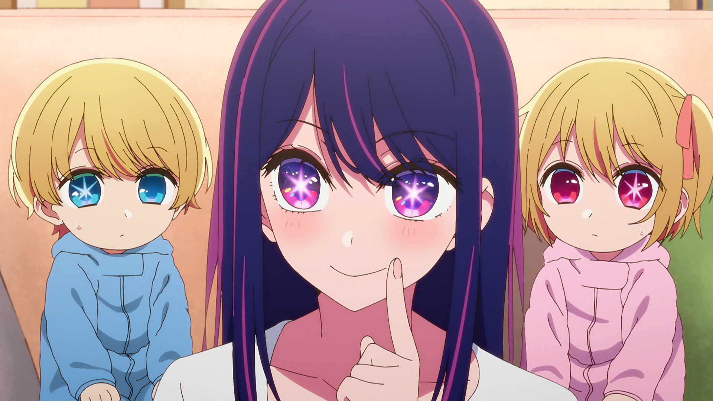
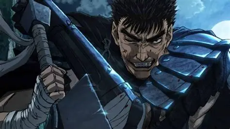
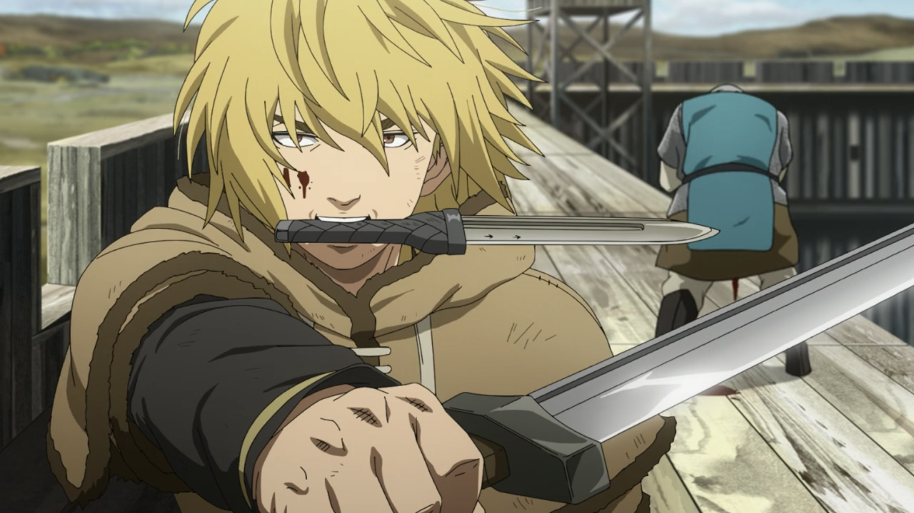
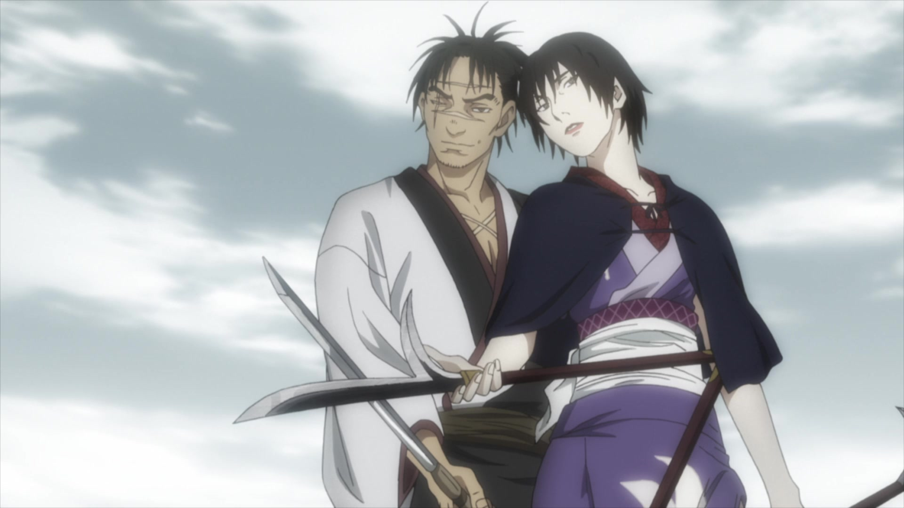
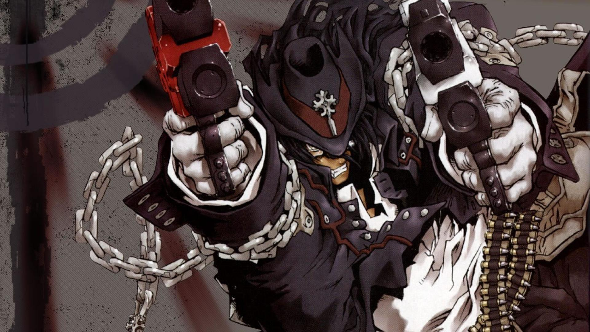
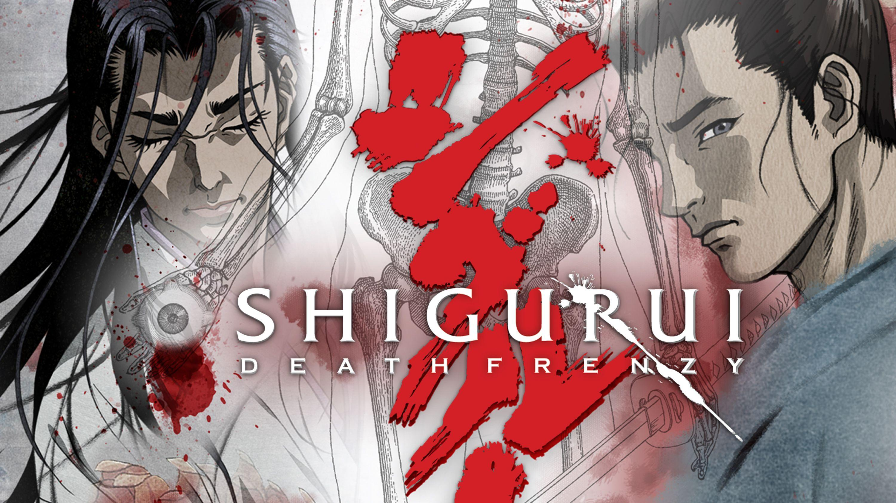
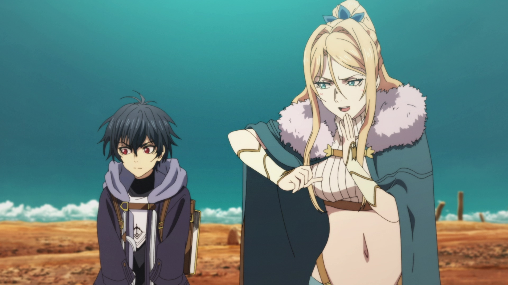

SMASH Senpai
Top 10 Revenge Anime Where Hatred Drives Everything
Some anime are about friendship. Some are about hope. These are not those anime.
Revenge anime are fueled by loss, betrayal, and anger that refuses to fade. The characters don’t fight to save the world. They fight because something was taken from them — and they want it back, no matter the cost.
This list focuses on revenge-driven stories. Not simple rivalries. Not temporary grudges. But anime where vengeance becomes the core motivation, shaping every decision and every act of violence.
Some of these stories are brutal. Some are slow and psychological. Others explode into pure rage and destruction. What they all share is one thing — revenge is not optional. It is inevitable.
These are the Top 10 Revenge Anime — where hatred runs deep, forgiveness is rare, and the line between justice and obsession disappears completely.
Sponsored
#1 91 Days
91 Days is one of the purest revenge anime ever made. There are no superpowers, no chosen heroes, and no moral safety nets. Just a man whose entire family was slaughtered — and a single goal that consumes every moment of his life.
Angelo Lagusa survives a mafia massacre that wipes out everyone he loves. Years later, under a false identity, he infiltrates the very organization responsible for his suffering. His revenge is not loud or impulsive. It is slow, calculated, and suffocating.
What makes 91 Days stand out is how deeply personal its revenge feels. Angelo doesn’t enjoy his actions. Every step closer to vengeance pushes him further into isolation and moral decay. Friendships become weapons. Trust becomes bait. Every smile hides intent.
The anime refuses to romanticize revenge. There is no triumphant release, no emotional reward. Each kill only deepens the emptiness, reinforcing the idea that revenge does not heal — it only consumes.
Set against a Prohibition-era mafia backdrop, the atmosphere is heavy, grounded, and relentlessly bleak. 91 Days is not about winning. It is about how far someone is willing to fall once they decide that nothing else matters.
- Episode count: 12
- Genre: Drama, Crime, Psychological
- Best for: Slow-burn revenge and emotional devastation
- Why it works: Revenge is the story, not a subplot

play anime smash or pass here (not sponsored)
SMASH SENPAI – Smash or Pass#2 Oshi no Ko
Oshi no Ko disguises one of the darkest revenge stories in anime beneath bright idols, fame, and entertainment industry glamour. But at its core, this is a revenge narrative fueled by betrayal, manipulation, and a truth that refuses to stay buried.
Aqua’s life is defined by a single objective — uncovering the truth behind his mother’s death and destroying the person responsible. His revenge is not explosive or violent. It is cold, patient, and deeply unsettling.
What makes Oshi no Ko unique is how revenge unfolds through psychological warfare rather than direct confrontation. Aqua uses people, relationships, and public perception as tools. Every interaction is calculated. Every smile hides intent.
The anime exposes the cruelty of the entertainment industry while mirroring Aqua’s internal descent. Fame becomes a weapon. Secrets become leverage. Revenge is not rushed — it is carefully engineered over time.
Oshi no Ko proves that revenge doesn’t always look like bloodshed. Sometimes it looks like manipulation, emotional damage, and destroying someone from the inside out. It is revenge that lingers, suffocates, and slowly tightens its grip.
- Episode count: 11 (Season 1)
- Genre: Psychological, Drama, Mystery
- Best for: Cold, calculated revenge stories
- Why it works: Revenge drives every major decision
Sponsored
#3 Berserk
Berserk is not just a revenge anime — it is the embodiment of rage, trauma, and betrayal given physical form. Guts’ journey is fueled by one of the most devastating betrayals in anime history, turning his life into an endless battlefield.
Unlike clean or heroic revenge stories, Berserk is raw and relentless. Guts does not seek justice or closure. He hunts because rage is the only thing keeping him alive. His revenge is violent, obsessive, and all-consuming.
What makes Berserk unforgettable is how revenge erodes everything else. Relationships suffer. Hope fades. Mercy becomes impossible. The world itself feels hostile, reinforcing that Guts is fighting not just enemies — but fate itself.
The anime never presents revenge as empowering. Every victory costs something. Every step forward leaves scars, both physical and emotional. Berserk makes it painfully clear that revenge demands sacrifice — and it never gives anything back.
Berserk stands as one of anime’s darkest revenge stories because it refuses to soften its message. Hatred keeps Guts moving, but it also ensures that peace will always remain out of reach.
- Episode count: Varies by adaptation
- Genre: Dark Fantasy, Action, Psychological
- Best for: Brutal, emotional revenge narratives
- Why it works: Revenge is inseparable from the protagonist’s identity
#4 Vinland Saga
Vinland Saga begins as a classic revenge story, but slowly transforms into something far deeper and more painful. Thorfinn’s entire childhood is stolen from him when his father is murdered in front of his eyes, leaving him with only hatred to cling to.
Unlike many revenge anime, Vinland Saga does not glorify violence. Thorfinn’s obsession with revenge turns him into a weapon — not a hero. He fights, kills, and survives not because he wants to, but because his hatred leaves him with no other purpose.
What makes Vinland Saga stand out is how revenge hollowes its protagonist. Thorfinn gains skill, strength, and battlefield experience, yet loses his identity in the process. Every victory feels empty. Every duel pushes him further from humanity.
The anime forces viewers to confront an uncomfortable truth — revenge does not bring peace. It only delays healing while deepening wounds. Thorfinn’s journey is not about becoming stronger, but about realizing how much revenge has already taken from him.
Vinland Saga is essential in any revenge list because it shows the full cost of hatred. It asks not how revenge is achieved, but what remains after it.
- Episode count: 24 (Season 1)
- Genre: Action, Drama, Historical
- Best for: Emotional, character-driven revenge
- Why it works: Revenge shapes — and destroys — the MC
Sponsored
#5 Blade of the Immortal
Blade of the Immortal delivers a brutal revenge story centered on Rin Asano, a young girl who witnesses her parents’ murder at the hands of a ruthless sword school. Her path to revenge is soaked in blood from the very beginning.
Accompanying her is Manji, an immortal swordsman cursed to live forever unless he redeems himself by killing a thousand evil men. Together, they form a partnership driven by pain, guilt, and vengeance.
What makes this anime compelling is how revenge is shared across generations. Rin’s hatred is raw and emotional, while Manji’s violence is weary and resigned. Every battle feels heavy, emphasizing that revenge is never clean or heroic.
The anime does not shy away from cruelty. Sword fights are messy, brutal, and unforgiving. Enemies do not fall gracefully — they suffer. Revenge here is exhausting, not satisfying.
Blade of the Immortal stands out by portraying revenge as a cycle — one that traps both the young and the broken. It asks whether vengeance is worth the humanity it consumes along the way.
- Episode count: 24
- Genre: Action, Samurai, Dark Fantasy
- Best for: Gritty sword combat and dark revenge
- Why it works: Revenge drives both protagonists
#6 Gungrave
Gungrave is a revenge anime rooted in betrayal between brothers-in-arms. It tells the tragic rise and fall of Brandon Heat and Harry MacDowell, whose friendship collapses under ambition, power, and greed.
Brandon’s revenge is not immediate. It is delayed by death itself. Revived years later as an undead enforcer, he awakens in a world shaped entirely by Harry’s ambition — and betrayal.
What makes Gungrave powerful is its emotional foundation. Revenge here is fueled not just by loss, but by broken trust. Brandon does not seek domination or chaos. He seeks answers — and closure he knows may never come.
The anime blends mafia drama with supernatural elements, but its heart remains deeply human. Every bullet fired carries regret. Every confrontation echoes the past they once shared.
Gungrave excels at portraying revenge as tragedy rather than triumph. It is a story where no one truly wins, and where vengeance only confirms how deeply everything has already gone wrong.
- Episode count: 26
- Genre: Action, Crime, Drama
- Best for: Emotional revenge driven by betrayal
- Why it works: Revenge is born from broken brotherhood
Sponsored
#7 Shigurui: Death Frenzy
Shigurui: Death Frenzy is one of the most disturbing revenge anime ever created. It strips away honor, romance, and heroism, presenting revenge as something grotesque, obsessive, and inescapable.
Set in feudal Japan, the anime focuses on two broken warriors bound together by rivalry, betrayal, and cruelty. Their relationship is poisoned from the start, turning every encounter into a psychological and physical nightmare.
What separates Shigurui from other revenge anime is its unflinching brutality. Violence is not stylized or empowering. Limbs are lost. Bodies are shattered. Pain lingers far longer than victory.
Revenge in Shigurui is not driven by justice or morality. It is fueled by pride, resentment, and ego. Characters destroy themselves in pursuit of vengeance that offers no reward.
This anime is not easy to watch — and that is its strength. Shigurui portrays revenge as a descent into madness, where the only certainty is suffering.
- Episode count: 12
- Genre: Psychological, Samurai, Horror
- Best for: Extreme, uncompromising revenge stories
- Why it works: Revenge is portrayed as pure destruction
#8 The Kingdom of Ruin
The Kingdom of Ruin is pure, unfiltered revenge. From its very first episode, the anime makes its intentions clear — this is a story fueled entirely by hatred, loss, and destruction.
After witnessing the brutal execution of witches — including the one who raised him — Adonis is left with nothing but rage. The world he lives in does not merely reject magic; it exterminates it. His revenge is not targeted at one individual, but at an entire system.
What separates The Kingdom of Ruin from traditional revenge anime is its lack of restraint. The protagonist does not hesitate, reflect, or seek redemption. His actions are cold, calculated, and merciless. Revenge here is not a phase — it is his identity.
While the anime received mixed ratings, its thematic focus is undeniable. It portrays revenge as corrosive and overwhelming, consuming both the victim and the world around them.
The Kingdom of Ruin belongs on this list because it commits fully to revenge. It does not soften its message or dilute its brutality. This is revenge without apology — and without mercy.
- Episode count: 12
- Genre: Dark Fantasy, Action
- Best for: Pure hatred-driven revenge
- Why it works: Revenge is the MC’s sole motivation
#9 Hell Girl (Jigoku Shoujo)

Hell Girl is one of the most unsettling revenge anime ever created — not because of violence, but because of choice. Every episode asks the same question: how far are you willing to go to make someone suffer?
The premise is deceptively simple. At midnight, those consumed by hatred can access a mysterious website and submit the name of someone they wish to send to hell. The revenge is instant, absolute, and irreversible.
However, revenge always comes with a price. The one who condemns another to hell is guaranteed the same fate after death. There is no loophole. No escape. Hell Girl forces its characters — and viewers — to confront the weight of vengeance.
What makes this anime powerful is its psychological depth. Many of the victims are cruel, abusive, or manipulative — but the show never frames revenge as heroic. It presents vengeance as a moral collapse driven by desperation.
Hell Girl earns its place by showing revenge as temptation. Easy to choose. Impossible to undo. It is one of anime’s most haunting explorations of hatred and consequence.
- Episode count: 26+
- Genre: Psychological, Supernatural, Horror
- Best for: Dark moral revenge stories
- Why it works: Revenge always comes at a cost
#10 Goblin Slayer

Goblin Slayer is revenge stripped of emotion, mercy, and symbolism. It is not about justice. It is not about redemption. It is about extermination.
After surviving a horrific goblin massacre in his childhood, the protagonist dedicates his entire existence to one goal: the complete eradication of goblins. He does not hate them loudly. He does not monologue. He simply hunts.
What makes Goblin Slayer unique is how methodical its revenge is. Every trap, tactic, and preparation is rooted in trauma. This is not rage-fueled vengeance — it is calculated, obsessive, and relentless.
The anime deliberately avoids glorifying heroism. Goblin Slayer is not celebrated. He is tolerated. His revenge isolates him from normal life, turning him into a weapon rather than a person.
Goblin Slayer belongs on this list because it shows revenge as survival instinct. Not something chosen — but something that consumes a person entirely.
- Episode count: 12+
- Genre: Dark Fantasy, Action
- Best for: Obsessive, trauma-driven revenge
- Why it works: Revenge defines the MC’s entire identity
Play Smash or Pass on SMASH Senpai.
 PLAY SMASH OR PASS
PLAY SMASH OR PASS